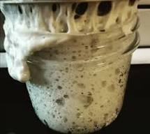

Sourdough Starter

Description
Making your own sourdough starter is fun and easy and yields delicious baked bread when used as levain.
Ingredients
- Wheat flour
- water
Instructions
- Find a glass jar, I prefer a canning jar.
- Add 4x tablespoons of flour to the jar.
- Now add 4x tablespoons of water and mix.
- Repeat this process everyday, taking care to toss any excess starter.
- In a week your starter will begin to bubble and ferment.
- You can store a starter in the fridge. Take out and feed before each use.